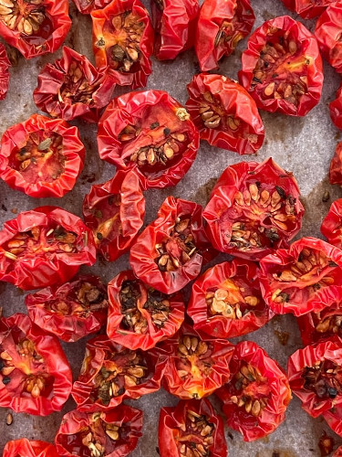

Sun-dried Tomatoes*

photo source *sun not included; just use oven
Description
Tangy, zesty, sun-dried dehydrated tomatoes go well with just about anything. They take a while to cook but are well worth the wait!
Ingredients
- A bunch of smaller variety tomatoes (eg, bing, cherry, roma)
- optional: sea salt
- optional: green herbs (eg, basil, oregano, etc)
Steps
- Preheat oven to 200° F (93° C)
- Get out the largest cooking sheet(s) you own and a mixing bowl
- Slice all tomatoes according to their size:
- For bing, cherry, and other small variety tomatoes: slice in half
- For roma or other medium variety tomatoes: slice into quarters
- Depending on how watery the inside of tomatoes are, discard some of the innards/seeds. This will shorten the cooking time.
- Optional: Place sliced tomatoes in mixing bowl. Toss with:
- Place slices tomatoes on baking sheet(s) skin-side down
- Put baking sheet(s) in oven. Bake on low for...4-6 hours!
- Obviously, best to prepare these tasty bits when you'll be home for a long stretch of time
- A few words of caution: As it gets closer to the 4-6 hour mark, check the tomatoes regularly. They will slowly lose their water and shrivel up over the cooking time, but once all their water has evaporated the tomatoes will transition to browning and burning relatively quickly. You just want to make sure to take them out of the oven before that happens!
- Remove from oven and let cool. Tomatoes will keep in air tight container in the refrigerator for ~4-5 days. If you want to store/preserve them for a longer (up to a few weeks), store in a container filled with enough olive oil to cover the tomatoes.
Home